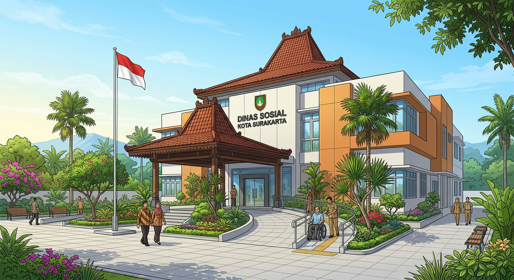

Pada Laman Website ini, terdapat 15 layanan yang terintegrasi pada Dinas Sosial Kota Surakarta.

Pilih layanan di bawah ini untuk melihat rincian persyaratan, alur mekanisme prosedur, jangka waktu penyelesaian, serta kanal konsultasi & pengaduan resmi.